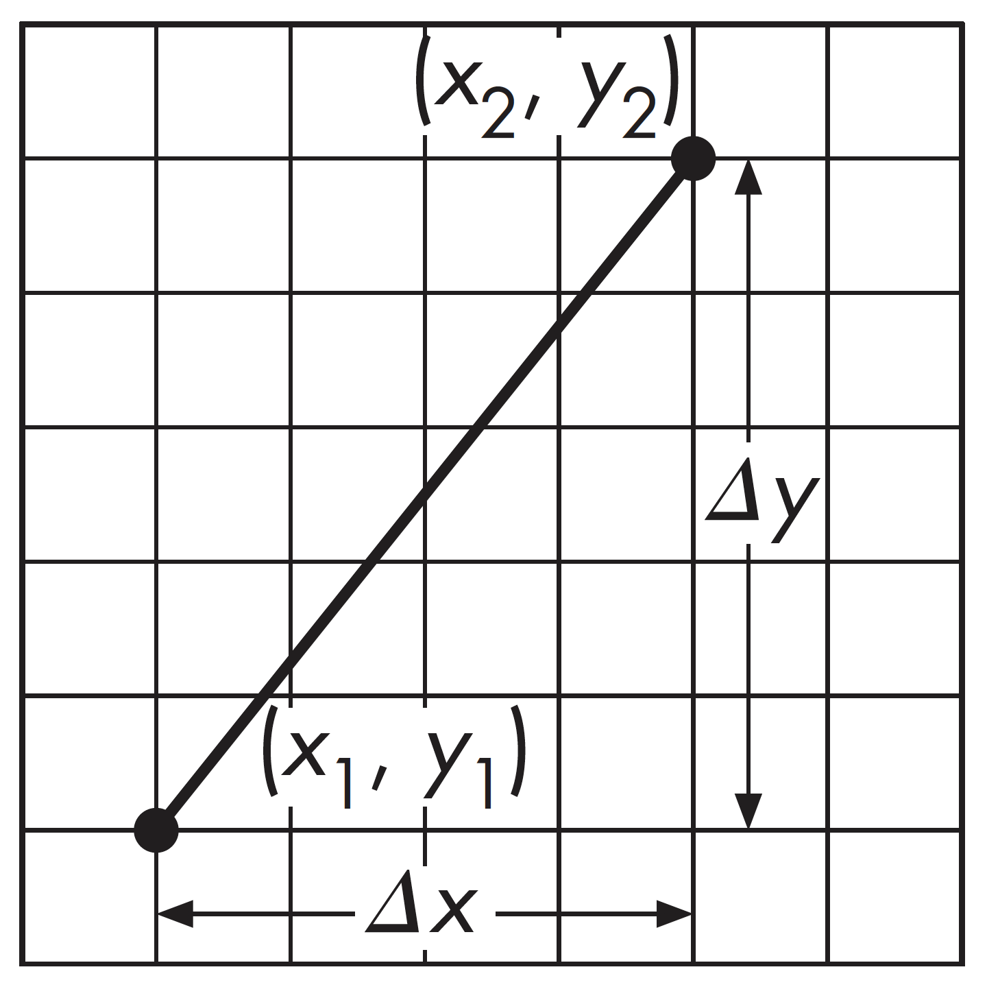
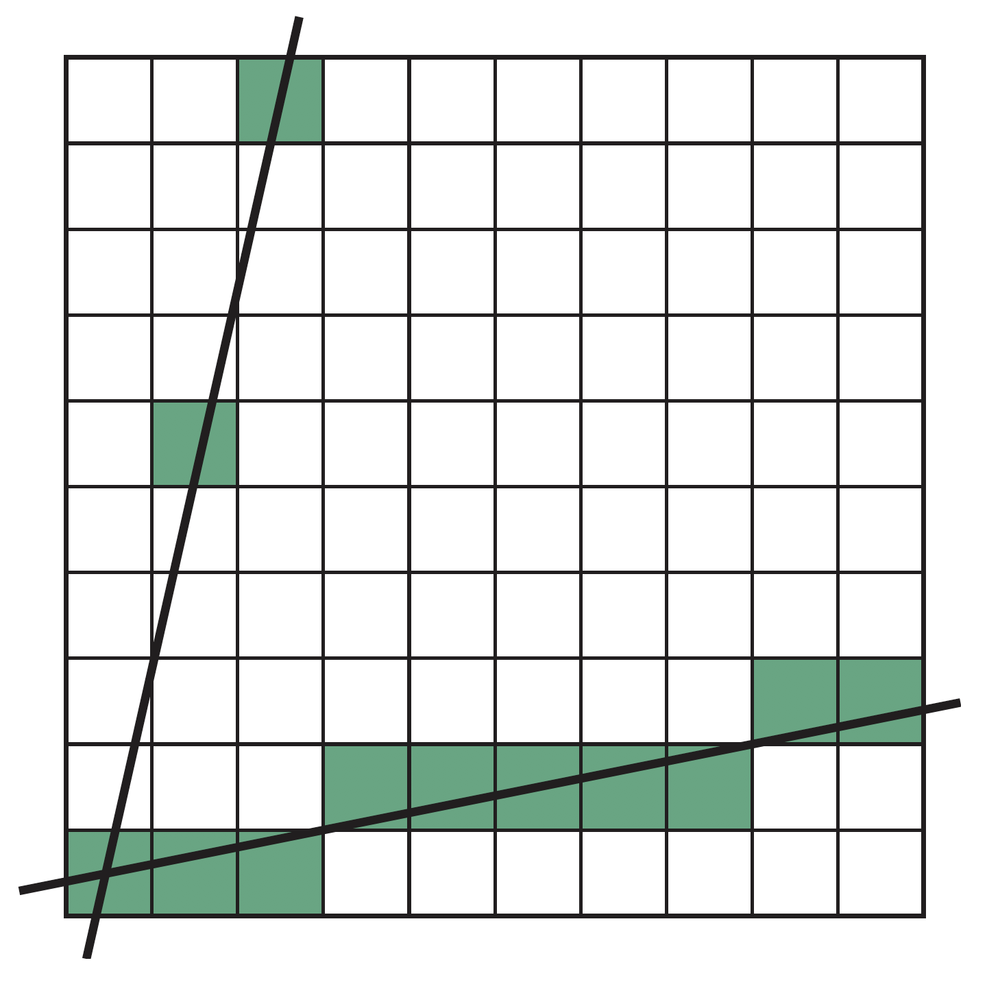
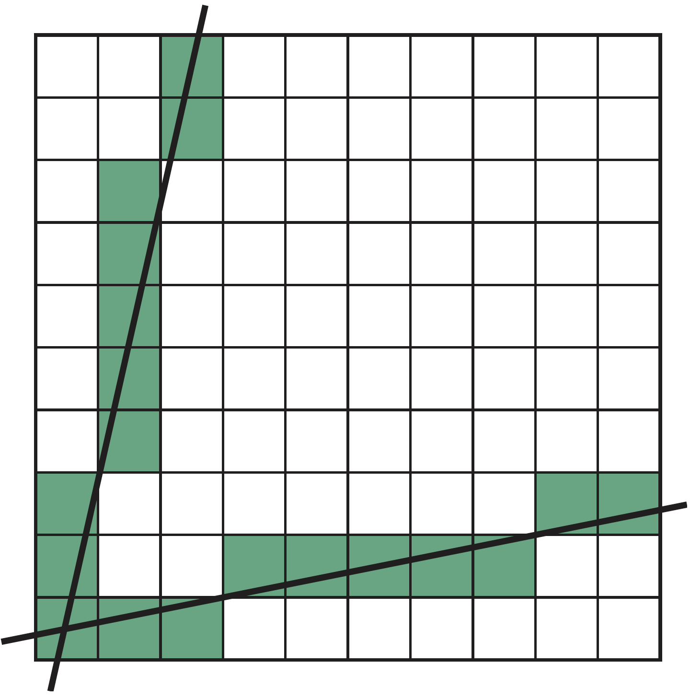
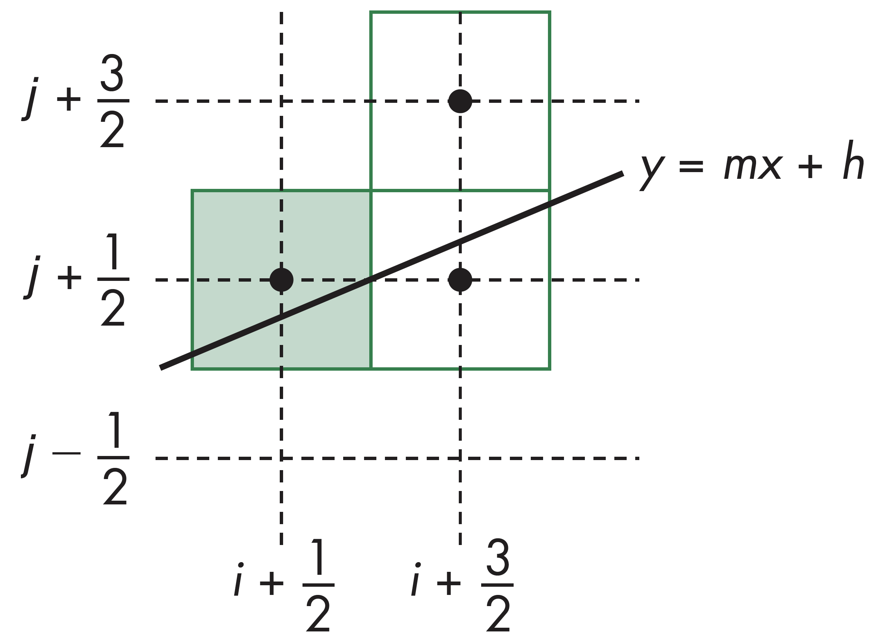
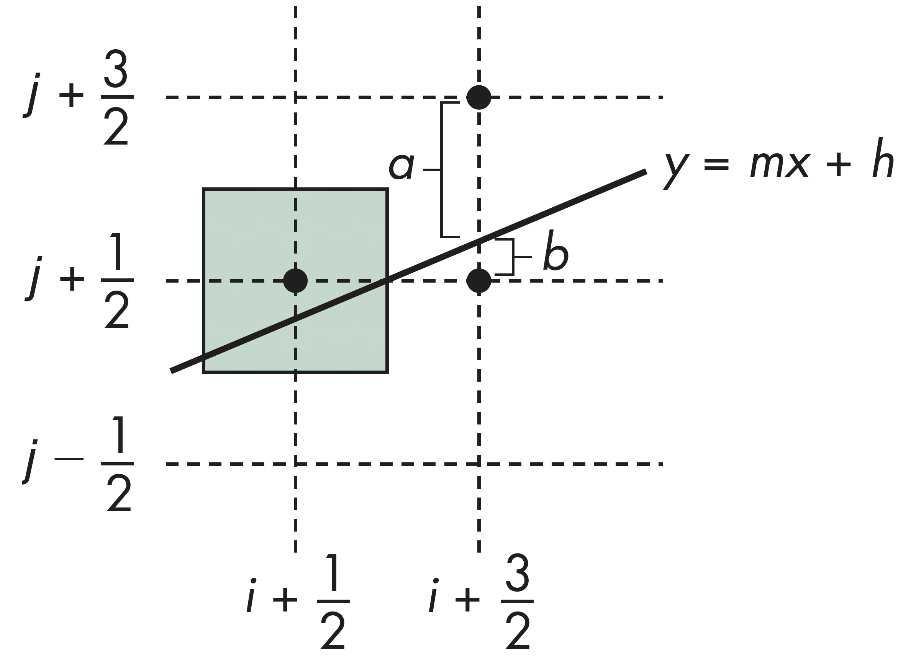
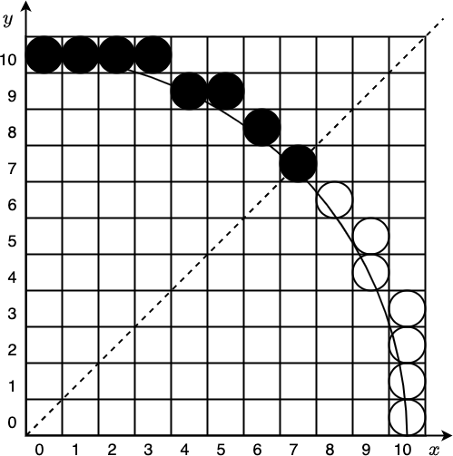
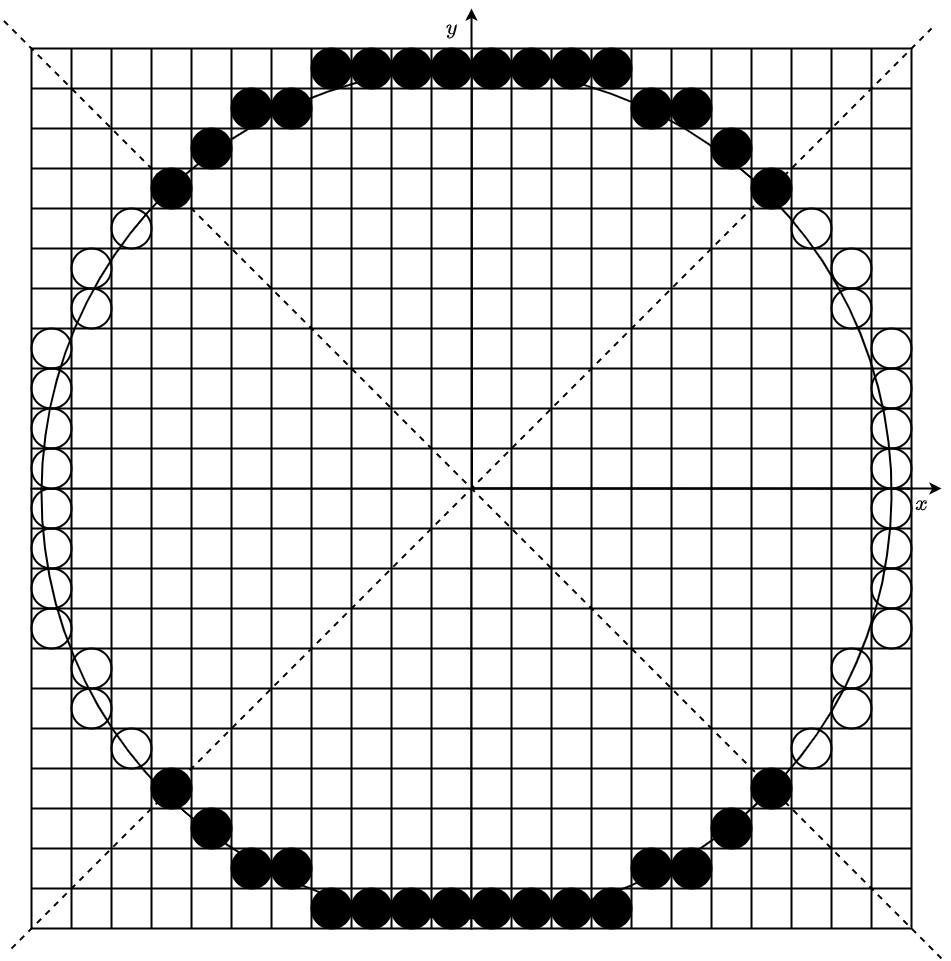

问题： 屏幕是由离散的像素点组成的网格。如何将连续的几何图元（如直线、圆、三角形）映射到这些离散的像素上？
扫描转换 (Scan Conversion)： 确定最佳逼近几何图元的像素集合的过程。
数学世界，连续、无限精度
光栅世界，离散、像素排列
如何在有限的方格中准确地绘制出“直线”
光栅化 (Rasterization) 是将几何图元（如点、线、多边形）转换为像素的过程，也称为扫描转换。
从数学和信号处理的角度，光栅化的本质是一个离散化采样的过程，即将在连续的几何空间中，由顶点定义的矢量图形，转变为在离散的屏幕空间中，由有限个像素点构成的阵列
光栅化在图形渲染管线中，通常发生在顶点处理之后，片元处理之前，主要有两个任务：
根据线段两个端点的坐标(通常是浮点数)，确定一组最佳逼近该线段的整数坐标像素点，并将这些像素点写入帧缓存的过程

基本思想： 利用增量，在沿着扫描线$\Delta x=1$的方向上计算
假设 $0< m \le 1$，让 $x$ 每次步进 1 ($x_{k+1} = x_k + 1$)
则 $y$ 的增量为 $m$：
$y_{k+1} = y_k + m$
计算出的$y$值通常为浮点数，需要四舍五入取整，即$y_k=round(y_k)$
for(x=x1;x<=x2;x++){
y+=m;
write_pixel(x,round(y),line_color);
}
DDA算法的主要思想是，对每一个$x$，计算距离其对应值最近的$y$值
对于斜率较大的线段，如$m >1$，$y$的增量较大，导致浮点数误差积累，影响最终效果

可利用对称性，原方法适用于$0\leq m \leq 1$的情况，当$m > 1$时，可交换$x$和$y$的角色，即对每个$y$，找到对应的$x$



根据$p=\Delta_x(b-a)$的值，下一个候选点有两种情形：
建立Bresenham画线算法的增量递推式提高计算$p$的效率。当$x=k$时，记为$p_k$，当$x=k+1$时，为$p_{k+1}$，有：
对每个$x$，只需一次整数加法和一次判断即可，在显卡核心上，只需要一条指令就能完成计算
void BresenhamLine(int x0, int y0, int x1, int y1) {
int dx = abs(x1 - x0), dy = abs(y1 - y0);
int p = 2 * dy - dx;
int twoDy = 2 * dy, twoDyMinusDx = 2 * (dy - dx);
int x, y;
// ... (处理不同象限和斜率，此处简化为 0 < m < 1 )
if (x0 > x1) { x = x1; y = y1; x1 = x0; }
else { x = x0; y = y0; }
setPixel(x, y);
while (x < x1) {
x++;
if (p < 0)
p += twoDy;
else {
y++;
p += twoDyMinusDx;
}
setPixel(x, y);
}
}
对圆心位于原点的圆，定义函数：$f(x,y)=x^2+y^2-r^2$
对任意一点$(x,y)$，有 $$ f(x,y)=\begin{cases} & f < 0, & if(x,y)在圆内 \\ & f = 0, & if(x,y)在圆弧上 \\ & f > 0, & if(x,y)在圆弧外 \end{cases} $$
圆的边界由函数$f(x,y)=0$确定
圆的绘制需要判断每个像素是否在圆内或圆外
如果直接采用方程式计算$y=\pm\sqrt{r^2-x^2}$, 因涉及开方运算，效率低且不均匀
圆具有高度对称性。只要画出 $\frac{1}{8}$ 圆弧（例如 $0^\circ$ 到 $45^\circ$），就可以通过对称变换得到整个圆
若点 $(x, y)$ 在圆上，则以下点也在圆上：
$(y, x), (y, -x), (x, -y), (-x, -y), (-y, -x), (-y, x), (-x, y)$
因此，我们只需要计算 $0 \le x \le y$ 的部分
类似Bresenham算法绘制直线，使用整数运算，根据圆弧上当前已占据的像素计算下一个像素的位置


Bresenham算法画圆的示例代码
void BresenhamCircle(int x0, int y0, int r) {
int x = 0, y = r; // 从 (0,r) 开始
int p = 1 - r;
setPixel(x0 + x, y0 + y);
setPixel(x0 - x, y0 + y);
setPixel(x0 + x, y0 - y);
setPixel(x0 - x, y0 - y);
setPixel(x0 + y, y0 + x);
setPixel(x0 - y, y0 + x);
setPixel(x0 + y, y0 - x);
setPixel(x0 - y, y0 - x);
while (x < y) {
if (p < 0)
p += 2 * x + 3;
else {
p += 2 * (x - y) + 5;
y--;
}
x++;
setPixel(x0 + x, y0 + y);
setPixel(x0 - x, y0 + y);
setPixel(x0 + x, y0 - y);
setPixel(x0 - x, y0 - y);
setPixel(x0 + y, y0 + x);
setPixel(x0 - y, y0 + x);
setPixel(x0 + y, y0 - x);
setPixel(x0 - y, y0 - x);
}
}
相比于 DDA 算法，Bresenham 算法在硬件实现上最大的优势是什么？
C. 仅使用整数加减和移位运算
解析：这是避免浮点运算开销的关键。
在 Bresenham 画线算法（第一象限，斜率 $0 < k < 1$）中，
如果决策参数 $P_k \ge 0$，下一个像素点应选哪里？
NE (xk+1, yk+1)
解析：Pk >= 0 意味着中点在直线的下方，直线更靠近上方的像素 (NE)。
利用圆的八路对称性，如果我们计算出了第一象限中
$0^\circ$ 到 $45^\circ$ 区域的点 $(x, y)$，
那么点 $(y, x)$ 对应的是哪个区域？
A. 第一象限 $45^\circ$ 到 $90^\circ$
解析：(x, y) 关于 y=x 对称得到 (y, x)，仍在第一象限。